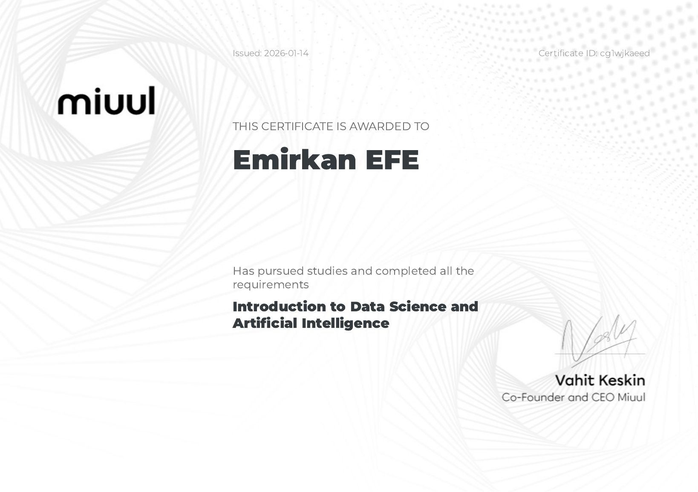
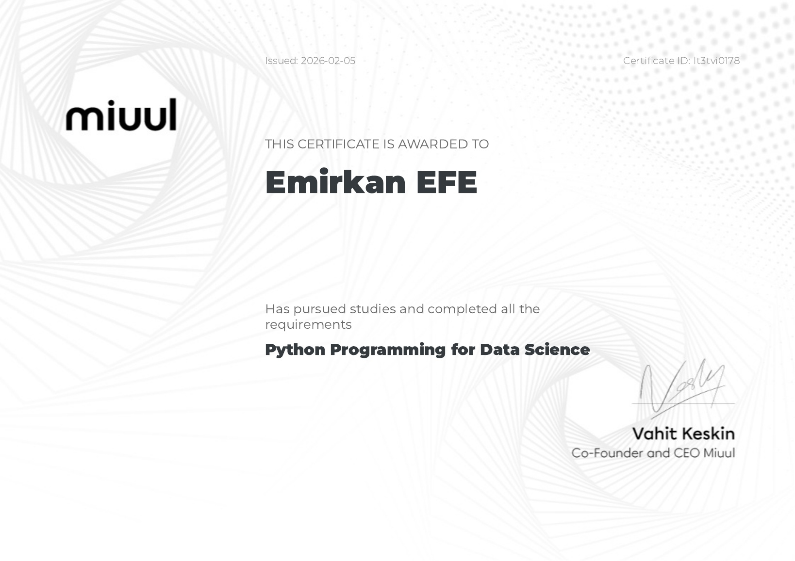
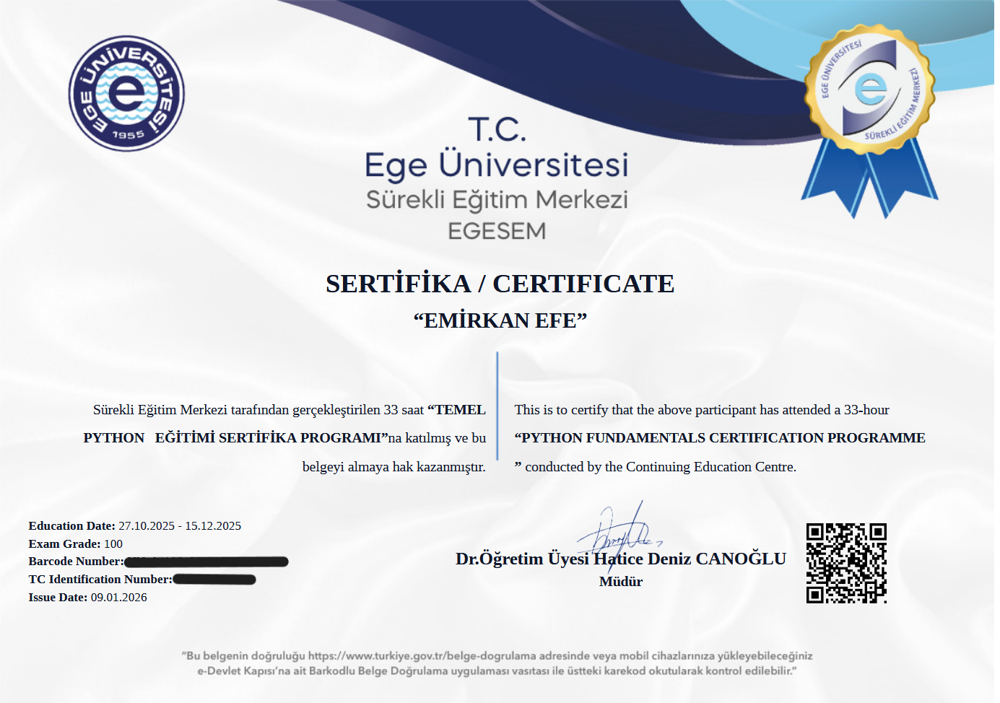
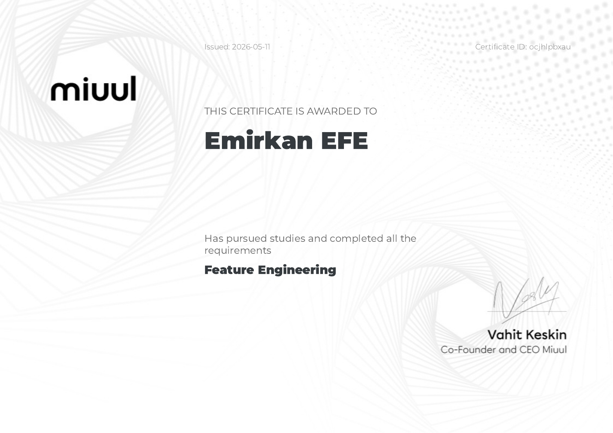
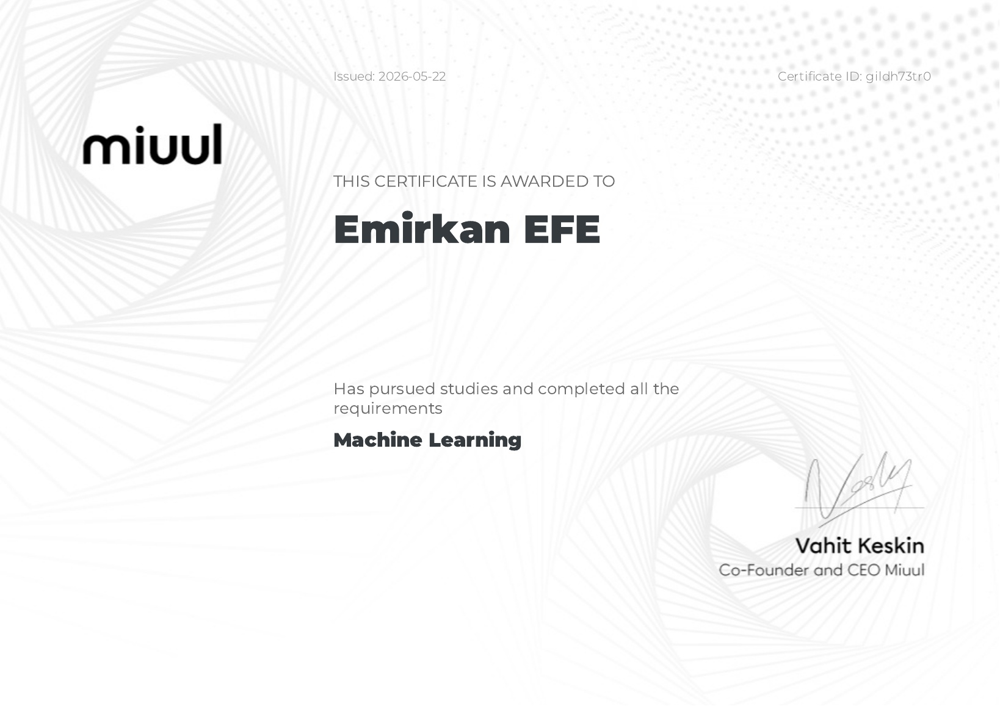
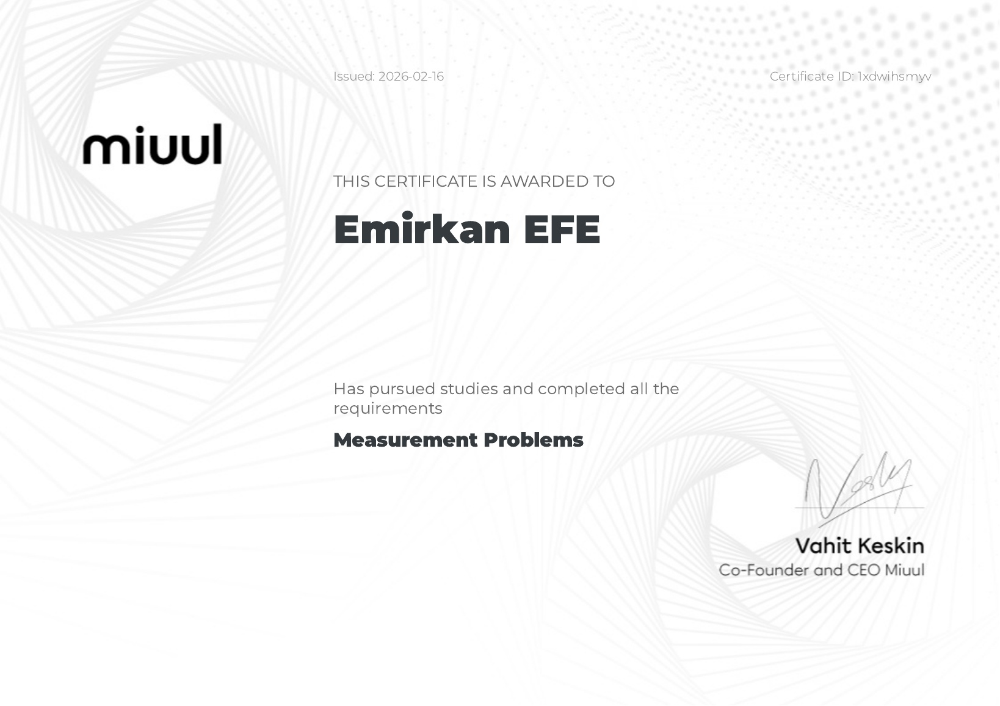
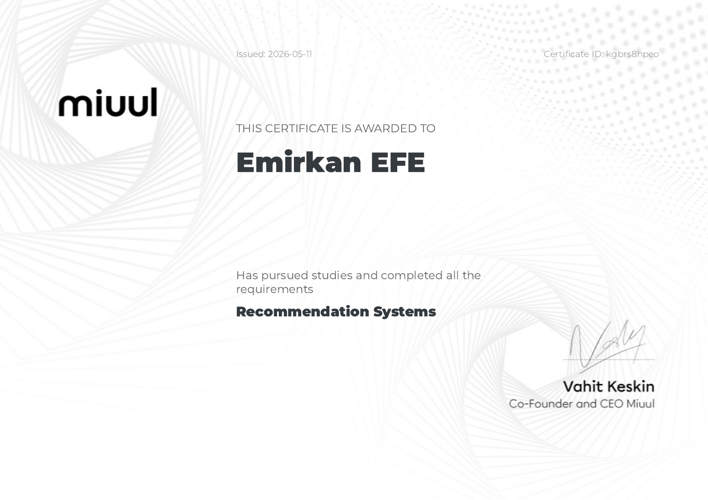

Hakkımda
Veri analizi, istatistiksel modelleme ve makine öğrenmesi üzerine projeler geliştiriyorum.
Ege Üniversitesi İstatistik bölümündeki eğitimim boyunca verinin işlenmesi ve anlamlandırılması süreçlerinde aktif rol aldım.
Uşak üniversitesinde Bilgisayar Programcılığı önlisansımı tamamladım. Bilgisayar Programcılığı serüvenimde uygulama, oyun geliştirme;
veri tabanı oluşturma ve yönetme; yaptığım staj sayesinde sahada çalışma, bilgisayarların donanımsal
ve yazılımsal mimarisini öğrenme konusunda kendimi geliştirme imkanı buldum.
Sertifikalar ve Başarı Belgeleri







Öne Çıkan Projeler
Kalite Kontrol Komisyonu Veri Analizi
Ege Üniversitesi bünyesinde anket verilerini PSPP kullanarak analiz ettim ve raporladım.
PSPP Veri Analiziİzmir Baraj Doluluk Oranı Tahmini
Lisans tezim kapsamında Yapay Sinir Ağları (ANN) kullanarak İzmir ili baraj doluluk tahmini yapan bir model geliştirdim.
Python ANNVeri ve İstatistik Topluluğu
Topluluğumuzun genel video ve grafik tasarım işleri ile uğraşırken halihazırda olan Photoshop ve Premiere Pro yeteneklerimi geliştirdim. Topluluğumuzun logosunu tasarlarken yaratıcı düşünme becerilerim gelişti
Premiere Pro, Photoshop Görsel Tasarım ve Vide Manipülasyonu YaratıcılıkDiğer projelerim için:
GitHubYetenekler
Programlama & Araçlar: Python (Pandas, NumPy, Matplotlib), R, PSPP, SQL, Git/GitHub
İletişim
Bana LinkedIn üzerinden ulaşabilir veya projelerimi GitHub'da takip edebilirsiniz.